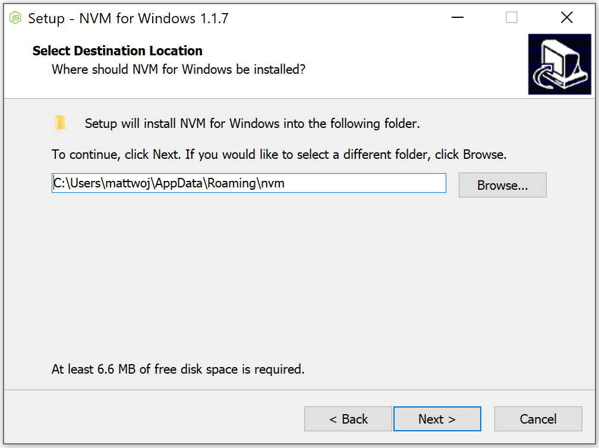
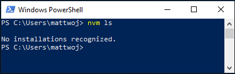
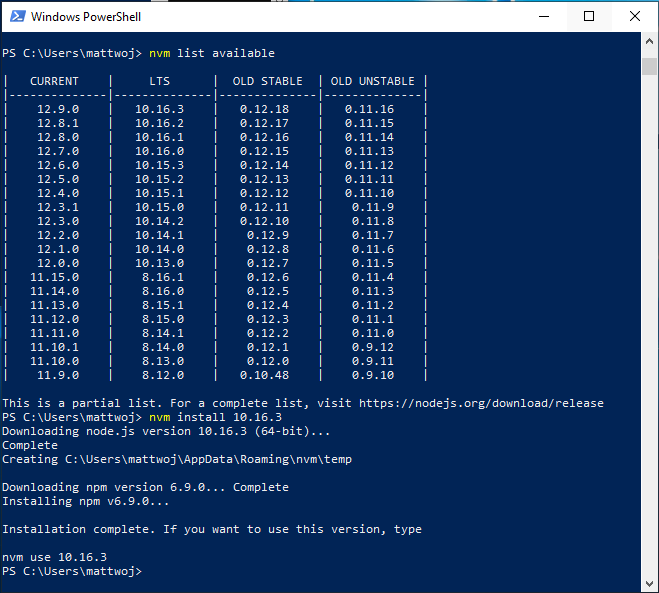
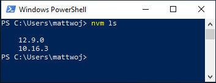

Install Node.js on Windows
This guide will help you to install Node.js in a Windows development environment.
For those who prefer using Node.js in a Linux environment, see Install Node.js on Windows Subsystem for Linux (WSL2).
Consider the following when deciding where to install and whether to develop with Node.js in a native Windows versus a Linux (WSL 2) environment:
- Skill level: If you are new to developing with Node.js and want to get up and running quickly so that you can learn, install Node.js on Windows. Installing and using Node.js on Windows will provide a less complex environment for beginners than using WSL.
- Command line client tool: If you prefer PowerShell, use Node.js on Windows. If you prefer Bash, use Node.js on Linux (WSL 2).
- Production server: If you plan to deploy your Node.js app on Windows Server, use Node.js on Windows. If you plan to deploy on a Linux Server, use Node.js on Linux (WSL 2). WSL allows you to install your preferred Linux distribution (with Ubuntu as the default), ensuring consistency between your development environment (where you write code) and your production environment (the server where your code is deployed).
- Performance speed and system call compatibility: There is continuous debate and development on Linux vs Windows performance, but the key when using a Windows machine is to keep your development project files in the same file system where you have installed Node.js. If you install Node.js on the Windows file system, keep your files on a Windows drive (for example, C:/). If you install Node.js on a Linux distribution (like Ubuntu), keep your project files in the Linux file system directory associated with the distribution that you are using. (Enter
explorer.exe .from your WSL distribution command line to browse the directory using Windows File Explorer.) - Docker containers: If you want to use Docker containers to develop your project on Windows, we recommend that you Install Docker Desktop on Windows. To use Docker in a Linux workspace, see set up Docker Desktop for Windows with WSL 2 to avoid having to maintain both Linux and Windows build scripts.
Install nvm-windows, node.js, and npm
Besides choosing whether to install on Windows or WSL, there are additional choices to make when installing Node.js. We recommend using a version manager as versions change very quickly. You will likely need to switch between multiple Node.js versions based on the needs of different projects you're working on. Node Version Manager, more commonly called nvm, is the most popular way to install multiple versions of Node.js, but is only available for Mac/Linux and not supported on Windows. Instead, we recommend installing nvm-windows and then using it to install Node.js and Node Package Manager (npm). There are alternative version managers to consider as well covered in the next section.
Important
It is always recommended to remove any existing installations of Node.js or npm from your operating system before installing a version manager as the different types of installation can lead to strange and confusing conflicts. This includes deleting any existing Node.js installation directories (e.g., "C:\Program Files\nodejs") that might remain. NVM's generated symlink will not overwrite an existing (even empty) installation directory. For help with removing previous installations, see How to completely remove node.js from Windows.)
Warning
NVM is designed to be installed per-user, and invoked per-shell. It is not designed for shared developer boxes or build servers with multiple build agents. NVM works by using a symbolic link. Using nvm in shared scenarios creates a problem because that link points to a user's app data folder -- so if user x runs nvm use lts, the link will point node for the entire box to their app data folder. If user y runs node or npm, they will be directed to run files under x's user account and in the case of npm -g, they will be modifying x's files, which by default is not allowed. So nvm is only prescribed for one developer box. This goes for build servers too. If two build agents are on the same vm/box, they can compete and cause odd behavior in the builds.
Follow the install instructions on the nvm-windows repository. We recommend using the installer, but if you have a more advanced understanding of your needs, you may want to consider the manual installation. The installer will point you to the releases page for the most recent version.
Download the nvm-setup.zip file for the most recent release.
Once downloaded, open the zip file, then open the nvm-setup.exe file.
The Setup-NVM-for-Windows installation wizard will walk you through the setup steps, including choosing the directory where both nvm-windows and Node.js will be installed.

Once the installation is complete. Open PowerShell (recommend opening with elevated Admin permissions) and try using nvm-windows to list which versions of Node are currently installed (should be none at this point):
nvm ls
Install the current release of Node.js (for testing the newest feature improvements, but more likely to have issues than the LTS version):
nvm install latestInstall the latest stable LTS release of Node.js (recommended) by first looking up what the current LTS version number is with:
nvm list available, then installing the LTS version number with:nvm install <version>(replacing<version>with the number, ie:nvm install 12.14.0).
List what versions of Node are installed:
nvm ls...now you should see the two versions that you just installed listed.
After installing the Node.js version numbers you need, select the version that you would like to use by entering:
nvm use <version>(replacing<version>with the number, ie:nvm use 12.9.0).To change the version of Node.js you would like to use for a project, create a new project directory
mkdir NodeTest, and enter the directorycd NodeTest, then enternvm use <version>replacing<version>with the version number you'd like to use (ie v10.16.3`).Verify which version of npm is installed with:
npm --version, this version number will automatically change to whichever npm version is associated with your current version of Node.js.
Alternative version managers
While NVM for Windows (nvm-windows) is currently the most popular version manager for node, there are alternatives to consider:
nvs (Node Version Switcher) is a cross-platform
nvmalternative with the ability to integrate with VS Code.Volta is a new version manager from the LinkedIn team that claims improved speed and cross-platform support.
To install Volta as your version manager, go to the Windows Installation section of their Getting Started guide, then download and run their Windows installer, following the setup instructions.
Important
You must ensure that Developer Mode is enabled on your Windows machine before installing Volta.
To learn more about using Volta to install multiple versions of Node.js on Windows, see the Volta Docs.
Install Visual Studio Code
We recommend you install Visual Studio Code for developing with Node.js on Windows. For help, see Node.js tutorial in Visual Studio Code.
Alternative code editors
If you prefer to use a code editor or IDE other than Visual Studio Code, the following are also good options for your Node.js development environment:
Install Git
If you plan to collaborate with others, or host your project on an open-source site (like GitHub), VS Code supports version control with Git. The Source Control tab in VS Code tracks all of your changes and has common Git commands (add, commit, push, pull) built right into the UI. You first need to install Git to power the Source Control panel.
Download and install Git for Windows from the git-scm website.
An Install Wizard is included that will ask you a series of questions about settings for your Git installation. We recommend using all of the default settings, unless you have a specific reason for changing something.
If you've never worked with Git before, GitHub Guides can help you get started.
We recommend adding a .gitignore file to your Node projects. Here is GitHub's default gitignore template for Node.js.
Node.js on Windows Server
If you are in the (somewhat rare) situation of needing to host a Node.js app on a Windows server, the most common scenario seems to be using a reverse proxy. There are two ways to do this: 1) using iisnode or directly. We do not maintain these resources and recommend using Linux servers to host your Node.js apps.